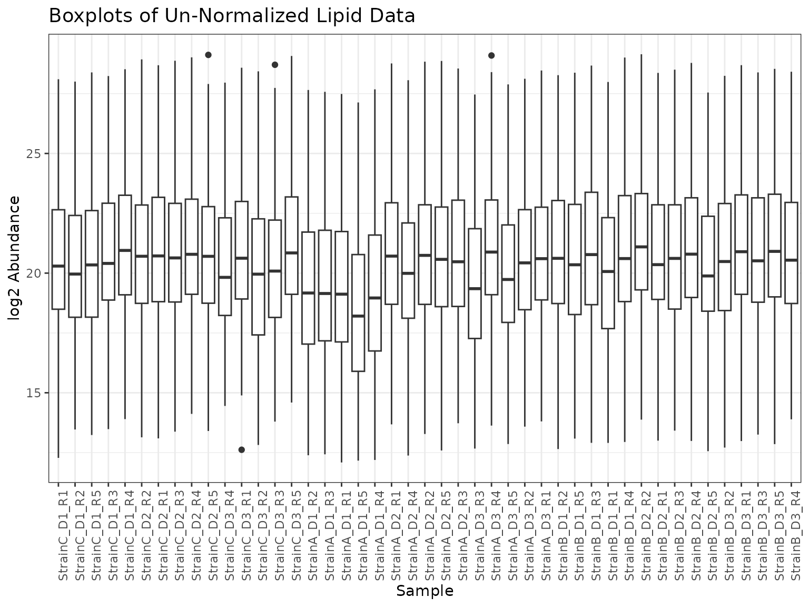

vignettes/Data_Object_Creation.Rmd
Data_Object_Creation.RmdThe pmartR package has been designed around omicsData
objects. These are S3 object classes defined for explicit use within
this package. Current omicsData classes supported are:
pepData: for unlabeled peptide data, typically generated via LC-MS/MS
isobaricpepData: for labeled peptide data, generated via iTRAQ or TMT labeling
proData: protein level data, often created from within a pmartR workflow by “rolling up” the peptide level data
metabData: metabolite data, often generated by GC-MS or HILIC
nmrData: metabolite data generated by NMR
lipidData: lipid data, often generated via LC-MS
seqData: sequence data, such as RNAseq
These objects are structured as lists, with 2 required and 1 optional
component (each component is a data frame). As various
pmartR functions are called on the data objects, attributes
are added to them, and utilized behind the scenes to help ensure proper
order of operations and usage of methods. The components of an omicsData
object are as follows:
pep_edata: \(p * (n +
1)\) data frame of expression data, where \(p\) is the number of biomolecules observed
and \(n\) is the number of samples (an
additional biomolecule identifier/name column should also be present
anywhere in the data frame). Each row corresponds to data for each
biomolecule.
pep_fdata: data frame with \(n\) rows. Each row corresponds to a sample
with one column giving the unique sample identifiers found in e_data
column names and other columns providing qualitative and/or quantitative
traits of each sample.
pep_emeta: optional data frame with at least \(p\) rows. Each row corresponds to a
biomolecule with one column giving biomolecule names (must be named the
same as the column in e_data) and other columns giving meta
information (e.g. mappings of peptides to proteins or lipids to lipid
classes).
The first step when analyzing data with pmartR is to
load the libary and create an omicsData object of the appropriate
type.
The pmartRdata package is a companion package to
pmartR that contains a number of example datasets leveraged
throughout the pmartR documentation.
This vignette will utilize the lipid example data from negative ionization mode. An example of creating an isobaricpepData object is included in the “Typical Processing Workflow” vignette.
# install the pmartRdata package, if needed
# devtools::install_github("pmartR/pmartRdata")
# load the pmartRdata package
library(pmartRdata)
# load example e_data, f_data, e_meta for the lipid negative ionization mode dataset
edata <- lipid_neg_edata
fdata <- lipid_neg_fdata
emeta <- lipid_neg_emetaThis required data frame contains the measurements for each sample and biomolecule. Oftentimes the first column contains the biomolecule names, although any column can contain this information. Remaining columns correspond to the samples, and the columns names for the samples must match the sample names in f_data. Each row corresponds to a biomolecule.
For our example negative ionization mode lipid data, the e_data data frame looks like this:
head(edata)## Lipid StrainC_D1_R1 StrainC_D1_R2 StrainC_D1_R5 StrainC_D1_R3
## 1 Cer(d18:0/14:0) 445725.8 1260287 2528509 1218971.5
## 2 Cer(d18:0/16:0)_A 10600000.0 30900000 52800000 25100000.0
## 3 Cer(d18:0/16:0)_B 480217.2 1618519 3087678 1666275.4
## 4 Cer(d18:0/18:0) 1709470.6 4714938 7465990 4484810.0
## 5 Cer(d18:0/20:0) 483498.0 1220789 2172556 998706.8
## 6 Cer(d18:0/22:0) 444571.1 1877654 4609238 1359720.2
## StrainC_D1_R4 StrainC_D2_R2 StrainC_D2_R1 StrainC_D2_R3 StrainC_D2_R4
## 1 2939663 2217700 2011162 1293641 1525448
## 2 52300000 30600000 29900000 27600000 29600000
## 3 2845213 2172109 2109035 2233002 2563891
## 4 9359053 4787902 6605616 5268256 4880907
## 5 2056002 1932246 2227289 1458024 1695467
## 6 3666047 3723602 2821416 1725994 2556836
## StrainC_D2_R5 StrainC_D3_R4 StrainC_D3_R1 StrainC_D3_R2 StrainC_D3_R3
## 1 2175756 825699.1 1160144.1 1758934 1486370
## 2 35500000 16200000.0 23100000.0 27800000 28300000
## 3 2441349 1391778.4 1687934.8 2374104 1977023
## 4 5417424 2141125.8 3594957.8 2893652 3180050
## 5 2164098 681164.3 764404.4 1233342 1092599
## 6 3445351 1283938.8 928568.4 3183416 2280447
## StrainC_D3_R5 StrainA_D1_R2 StrainA_D1_R3 StrainA_D1_R1 StrainA_D1_R5
## 1 2489295 892039.7 847361.2 691086.5 473943.9
## 2 46500000 26100000.0 17500000.0 22100000.0 11600000.0
## 3 4001702 1709295.2 1009221.8 1390733.2 696190.9
## 4 5304760 4012560.2 3139611.8 3777571.8 1519222.5
## 5 1947711 1205966.2 744512.8 1106342.8 530948.6
## 6 3569795 1804932.4 1033371.1 1540350.6 1259042.6
## StrainA_D1_R4 StrainA_D2_R1 StrainA_D2_R4 StrainA_D2_R2 StrainA_D2_R5
## 1 772221.2 2485838 2077216 2012686 2554315
## 2 20900000.0 41700000 31800000 37600000 37400000
## 3 1283208.8 2359732 1830136 2468240 2022962
## 4 3420965.8 4526626 3780004 6411638 5225726
## 5 805032.1 2308200 1620420 2260432 1980328
## 6 1611332.5 5655266 3124812 5062968 3552618
## StrainA_D2_R3 StrainA_D3_R3 StrainA_D3_R4 StrainA_D3_R5 StrainA_D3_R2
## 1 1718077 1360021 2209800 1117420.2 1245019.4
## 2 27600000 24300000 43400000 22500000.0 25500000.0
## 3 2813494 1656948 2562174 1223453.8 2210856.0
## 4 3532641 3463171 4347689 2170036.5 2135479.8
## 5 1427948 1299932 1576625 744365.1 947296.9
## 6 3131877 2810795 4022180 1555746.2 1769404.1
## StrainA_D3_R1 StrainB_D1_R2 StrainB_D1_R5 StrainB_D1_R3 StrainB_D1_R1
## 1 1275900 1029965.2 527178.6 1005665.1 318597.9
## 2 22900000 14400000.0 12600000.0 18100000.0 8598328.0
## 3 2010937 1315405.5 1293831.6 1437467.8 840292.9
## 4 2305950 3176372.8 3443368.2 7523180.0 2720615.0
## 5 903178 693888.8 713894.2 1245211.9 574673.1
## 6 2559024 594238.0 633943.2 617137.9 377420.5
## StrainB_D1_R4 StrainB_D2_R2 StrainB_D2_R1 StrainB_D2_R3 StrainB_D2_R4
## 1 805351.4 2698434 1504156 1061291.8 1806853
## 2 24000000.0 29900000 22300000 17600000.0 28400000
## 3 1497054.8 2830858 1423045 1350866.4 1500013
## 4 11400000.0 5629466 7392206 6158558.5 7952148
## 5 1796523.9 1606155 1658960 1143442.2 1613223
## 6 701925.8 1573197 1041264 686938.8 1215007
## StrainB_D2_R5 StrainB_D3_R2 StrainB_D3_R1 StrainB_D3_R3 StrainB_D3_R5
## 1 1044526.1 1008110.0 1762087.9 732518.1 1734152.4
## 2 18700000.0 15500000.0 25000000.0 16000000.0 24700000.0
## 3 1238432.9 875198.4 1984433.4 1643986.8 1259269.1
## 4 6561955.0 5039267.5 6815551.0 4156628.5 6970469.0
## 5 1096615.5 817045.2 1197861.6 692459.9 1048563.4
## 6 827401.6 530456.1 871902.3 505479.8 967380.6
## StrainB_D3_R4
## 1 803817.6
## 2 15200000.0
## 3 1130213.0
## 4 3967767.2
## 5 842133.8
## 6 536729.8This required data frame contains information about each sample. One column must contain the sample names, which are identical to the column names in e_data that correspond to the samples. Other information that may be of use to store in f_data includes:
Experimental group(s) to which the sample belongs
Other phenotypic information (e.g. age or sex, time of sampling if relevant to the experimental design) or properties of the samples (e.g. sample weight or concentration)
Run order for the samples
Batch number, if samples were run in multiple batches
The type and amount of information to include in f_data depends on
the experiment and the researcher. It is okay to include extra
information that does not get used in the pmartR analysis
pipeline.
For our example negative ionization mode lipid data, the f_data data frame contains the sample identifier, virus strain, replicate, and donor.
head(fdata)## SampleID Virus Replicate Donor
## 107 StrainC_D1_R1 StrainC R1 D1
## 109 StrainC_D1_R2 StrainC R2 D1
## 110 StrainC_D1_R5 StrainC R5 D1
## 112 StrainC_D1_R3 StrainC R3 D1
## 113 StrainC_D1_R4 StrainC R4 D1
## 134 StrainC_D2_R2 StrainC R2 D2Note that the entries in the SampleID column can be mapped one-to-one to the column names of e_data (excluding the biomolecule identifier column). The entries do not have to be in the same order.
## [1] TRUE## [1] TRUEThis optional data frame can contain any metadata associated with the biomolecules. One column must contain the same biomolecule identifiers (and the same column name) as the biomolecule identifier name in e_data. For peptide data that will be rolled up to the protein level, e_meta should be present and contain the peptide to protein mapping. For lipid data it can be useful to include the mapping of lipids to various lipid classes. Metabolites could be mapped to other identifiers (KEGG, InChI key, etc.).Each row corresponds to a biomolecule.
For our example negative ionization mode lipid data, the e_meta data frame looks like this:
head(emeta)## Lipid Row Retention_Time
## 1 Cer(d18:0/14:0) 510.4902 15.80732
## 2 Cer(d18:0/16:0)_A 538.5217 16.64928
## 3 Cer(d18:0/16:0)_B 538.5216 16.81711
## 4 Cer(d18:0/18:0) 566.5528 17.37118
## 5 Cer(d18:0/20:0) 594.5845 17.99525
## 6 Cer(d18:0/22:0) 622.6160 18.53824Note that all of the entries in the e_data biomolecule column are found in the e_meta biomolecule column. Here were are not mapping to lipid classes, but are recording the Row and Retention Time values for each lipid.
## [1] TRUETo create the lipidData object with our example data, we need the 3 data frames and some additional information about the data contained therein:
edata_cname: column name for biomolecule identifier column in e_data data frame
fdata_cname: column name for sample identifier column in f_data data frame
emeta_cname: column name for biomolecule identifier column in e_meta data frame (can be the same as the edata_cname, if we are not trying to roll peptides up to protein level)
data_scale: is the data on the abundance scale, has it already been log2 or log10 or log transformed, or for seqData objects this is “count”
data_types: optional argument for additional information about the data type; often used if there are datasets for both negative and positive ionization modes on an instrument
mylipid <- as.lipidData(e_data = edata,
f_data = fdata,
e_meta = emeta,
edata_cname = "Lipid",
fdata_cname = "SampleID",
emeta_cname = "Lipid",
data_scale = "abundance",
data_types = "Negative Ion")Now we have an object of class lipidData. Built-in summary and plot methods now operate on this object and provide additional information.
class(mylipid)## [1] "lipidData"
summary(mylipid)##
## Class lipidData
## Unique SampleIDs (f_data) 45
## Unique Lipids (e_data) 337
## Unique Lipids (e_meta) 337
## Missing Observations 50
## Proportion Missing 0.003
plot(edata_transform(mylipid, data_scale = "log2"))
See “Quality_Control_with_pmartR” vignette for next steps.